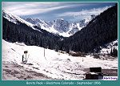
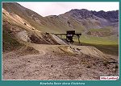
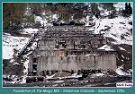
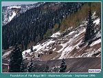
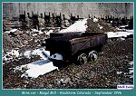
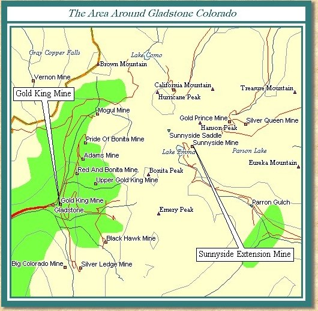
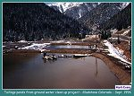
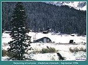
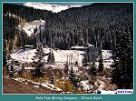
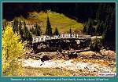

| Gladstone is found in one of the most stunning areas of the San Juan Mountains. Located at the head of Cement Creek above Silverton, Gladstone was settled in 1879, and was home to many miners working area claims. Another small settlement, Fisherville, was just below Gladstone at the site of the Fisher Sawmill. Many employees of the sawmill also added to the population of Gladstone. As the sawmill and area mines developed, a wagon road was built up Cement Creek to allow for transportation of lumber and ore into Silverton. The wagon road also encouraged more people to live in Gladstone. |
|
 |
A fresh coating if snow on Storm Peak above Gladstone September 1996 (81k) |
| Gladstone continued to be a sleepy little settlement until the Gold King Mine, discovered by Olaf Nelson in 1887, became a major producer. One day while he went about his work at the Sampson Mine, Nelson noticed a promising vein that looked like it went outside the limits of the Sampson claim. Nelson did not have the money necessary to develop a mine but registered his claim anyway. Eventually, Nelson managed to dig a shaft, and began shipping ore from the Gold King. Several valuable loads of ore were shipped from the mine before Nelson's death in 1890. |
|
 |
Minehaha Basin above Gladstone
(99k) |
| In 1894, Cyrus Davis and Henry Soule, who owned other area mines, were looking for promising mine properties to purchase. At the suggestion of Willis Z. Kinney, the manager of their less than successful Harrison Mine, they purchased the Gold King from Nelson's widow for $15,000.00. After a year under Kinney's management the Gold King started to produce very well. The Gold King grew and eventually encompassed 40 claims including the old Sampson Mine that Nelson had worked at when he made his discovery. The Sampson Mine still holds the record for a single shipment of gold. The shipment showed an assay value of $180,000.00 per ton. |
| Eventually, the Gold King Mine built a large modern stamp mill in Gladstone. It was one of the finest in the country at the time. The mill started as a 20 stamp affair but eventually grew to 80 stamps. The mill was 460 feet long, had a total floor space of twenty-five thousand square feet and cost nearly $350,000.00 to build. The daily output of the mill was four hundred tons with a yield of fifty to sixty tons of concentrates high in gold, silver, and copper. The mill required a staff of 40 men to operate and was the largest building in Gladstone. The mill and surface buildings of the Gold King alone made Gladstone a sizeable city. Gladstone also had a lot of company supplied housing for the employees of the Gold King Mine. |

|
Minehaha Basin above Gladstone
(99k) |
| As the Gold King grew in size, it became evident that a railroad connection with Silverton was needed. In mid June of 1898, W. Z. Kinney approached Alexander Anderson about building a branch line up Cement Creek. Anderson, the Superintendent of the SNRR and SRR, had his own problems. The SRR was in receivership and most of the mines on the SRR were closed due to high water levels. Otto Mears had moved back East and was busy with his duties as president of both The Mack Truck Company and The Chesapeake Short Line Railroad at this time. The last thing Mears wanted to do was invest more capital in his Colorado railroads. |
| Due to Mears' lack of interest in the project, Anderson approached Kinney with a proposition. Since Mears had left the area and seemed sour on his Colorado properties, Anderson proposed building the line with Kinney's help. Anderson also went as far as to propose the purchase all of Mears properties, including the SNRR and SRR. The owners and stockholders of the mines in Gladstone were not that committed to a railroad. They turned Anderson down. |
|
 |
Mogul Mill in Gladstone
September 1996 (81k) |
|
 |
Mogul Mill in Gladstone
September 1996 (75k) |
| Later in 1899, the management and stock holders of the Gold King mine decided to build the railroad themselves. They needed a connection with Silverton to help lower shipping expenses. They chartered the Silverton Gladstone and Northerly Railroad on April 6, 1899. They gave the Rocky Mountain Construction Company the contract to build the line up Cement Creek to the mines and mills at Gladstone. Construction began immediately in April. The SNRR, and SRR provided construction trains with crews at the rate of $10.00 per day while the construction was underway. |
| The new railroad helped to make the Gold King Mine prosperous for several years. Operations continued until 1907 when a fire destroyed the surface buildings of the Gold King Mine. Three men were trapped in the mine but a search party managed to find them unharmed inside the mine. Before they could rescue the three men, the smoke and fumes managed to kill six men. Four of the dead were part of the original rescue party that found the men in the mine. The Gold King was reopened but closed again in 1910 because of litigation and labor problems. |
| Otto Mears, taking advantage of the owners problems, took out a lease on the Gold King properties which he held until 1916. In 1918 a new company bought the mine and operated it until the fall of 1922. At this point the Gold King Mine closed again, removing the only reason to keep the Gladstone Branch of the Silverton Gladstone and Northerly Railroad intact. The Railroad had ceased operations in 1915 but the track was kept intact because periodically, rumors of the Gold King reopening would circulate. The Gold King was the Second best producer in the area and shipped 711,144 tons of ore while in operation. This ore was valued at $8,385,407.00. The total production for San Juan County during the years of 1873-1923 totaled $70,381,891.00. |
| In 1959, the Standard Metals Corporation purchased the Sunnyside Mine, on the east side of Bonita Peak. They planned to work the Sunnyside Mine from the west or Gladstone side of the mountain. To facilitate this operation, they built which the American Tunnel which connected the underground workings of the two best producing mines in San Juan County. The ore was removed through the American Tunnel in Gladstone, and transported by truck down the old Silverton Gladstone and Northerly Railroad grade. The grade was widened to accommodate the huge trucks and today looks like a four-lane highway. Standard Metals managed to "keep their heads above water" until 1978. All of that changed on a quiet Sunday evening in June. |
|
 |
Old mine car at the Mogul Mill in Gladstone
September 1996 (75k) |
| As you look at a map of the area that the Sunnyside and Gold King mines are located in, you will notice a small lake. Lake Emma was located directly over the underground workings of the Sunnyside Mine. The old mine surface workings had for years been on the shores of the small alpine lake. As luck would have it, some of the most valuable ore in the Sunnyside was located directly under Lake Emma. This ore was very rich, and thus tempted the mine's owners over the years to mine the area under the lake. Eventually only 90 feet separated the lake and the underground tunnels. |

| During the winter of 1977-78, a fault appeared in the mine under the lake. The fault began to leak a little water, and mud. As time went on, the crack got a little larger, and a little more water made its way into the mine. Many of the mines in the Silverton area had an underground water problem so it wasn't that unusual to see the water. Of course the location of the lake made this a situation that warranted a closer look. The maps of the mine were consulted over and over but it was felt that the distance between the lake, and mine were safe. The safety inspectors in the mine kept a very close eye on the leak as work continued. Towards the end of May in 1978, the leak seemed to have plugged itself, and very little water made its way into the mine from the crack. |
| This development made the safety inspectors feel pretty good about things until a miner's wife had a dream. She dreamt that the whole of Lake Emma drained into the mine. Miners are by nature a superstitious lot ( I have been a member of this fraternity so feel comfortable saying this) so this caused quite a stir. Eventually the miners refused to work near the fault. The managers were of course upset and had the inspectors check the crack every morning for any change. All seemed well as the last shift left on Saturday the 3rd of June. |
| Sunday dawned a beautiful day and everyone enjoyed their day of rest in Silverton. That evening at approx 6:50 P.M., things changed forever at the Sunnyside mine. The lake broke through into the mine. By the time it was over, the entire contents of the lake had drained into the mine. Tons of silt entered the mine destroying everything in its path. The Sheriff was summoned to the portal of the American Tunnel by a concerned citizen who indicated something was very wrong at the mine. As the Sheriff made his way up Cement Creek, he was met by a wave of water 8 to 10 feet high. The water was black and full of debris. |
| After making his way across the swollen stream, the Sheriff met the night watchman and stood by to witness the scene at the mouth of the tunnel. A roaring torrent of water was emitting from the tunnel sending timbers and equipment into the air like missiles. After it was determined that no one had been at work in the mine, the Sheriff retreated to town to spread the bad news. The disaster, of course, closed the mine. Two years of back braking work were required to open the mine. The mine never regained its profitable status and eventually due to a poor metals market, was forced to close in January of 1985. Other companies made a try at operating the mine but all were unsuccessful. The magnificent Sunnyside closed for the last time in July of 1991 forcing the layoff of 150 miners. |
|
 |
Tailings ponds from ground
water clean up project September 1996 (64k) |
| The mine is currently under going a reclamation project at this time. The many miles of tunnels are being plugged with cement and the run off water is being treated and monitored. It is thought that if the mine is sealed, water contamination can be eliminated. On my last trip to Gladstone in September of 1996, the evidence of the work was plain to see. I saw men in Government pickups sampling the water in Cement Creek. It is thought that the reclamation project will cost more than all of the profits the mine made in its nearly 100 years of operation. |
|
 |
Remaining buildings in Gladstone
September 1996 (71k) |
| A trip to Gladstone is a must for anyone visiting the area as the road is passable by any vehicle. It is a very good road and the scenery is great. There are many 4X4 trips that can be made in the area. The dirt road that continues above Gladstone is accessible by 4X4 vehicles and will take you to a couple of areas. One for will take you down to Ironton via the Corkscrew Gulch area. Another will take you over to Animas Forks. I haven't had the chance to take either of these trips but let me know if you have. I would be interested in your description of these areas. |
| Jerry Clark, has submitted his narrative of a trip he took up Prospect Gulch.I have included it on the 4X4 Adventures Page located on the main page of the Narrow Gauge Circle. Stop in and read about some of the trips we have made in the San Juans. |
|
 |
Mine buildings up Cement Creek about
1/2 of the way to Gladstone September 1996 (90k) |
|
 |
Remains of a Silverton Gladstone and Northerly trestle above Silverton
(138k) |